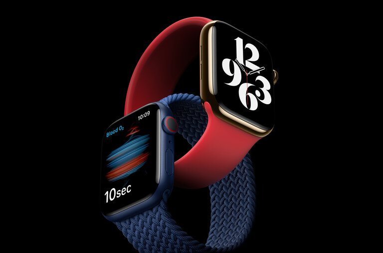
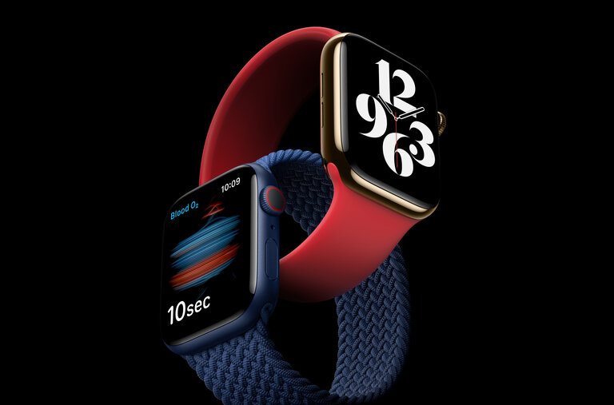

China Economy Grows 4.9% as Rest of World Struggles With Coronavirus
The third-quarter results put China’s economy back toward its pre-coronavirus trajectory half a year after the pandemic gutted it.
Farmers Stick With Trump, Despite Trade-War Pain
Many in agriculture say they believe a Biden presidency would bring stricter environmental regulations and higher taxes than the incumbent. “I’ll take the good with the bad.”
Credit Scores Rise Amid Recession
The average credit score hit a record in July after millions of Americans had lost their jobs, scrambling lenders’ underwriting models.
 
